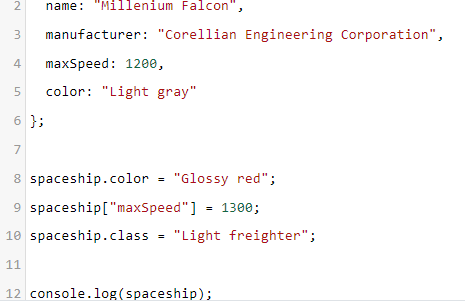

Object
Kali ini kita akan berkenalan dengan tipe data object. Sebuah tipe data yang sangat berguna dalam pengembangan aplikasi dengan JavaScript. Object mampu menyimpan nilai dari beragam tipe data dan membentuk data yang lebih kompleks.
Untuk menetapkan objek pada sebuah variabel kita gunakan tanda kurung kurawal {}

Object berisi pasangan key dan value yang juga dikenal dengan property. Key berperan mirip seperti nama variabel yang menyimpan sebuah nilai. Sementara, value berisi nilai dengan tipe data apa pun termasuk objek lain. Key dan value di dalam object dituliskan seperti berikut:
Key harus berupa string dan dituliskan sebelum titik dua (:), lalu diikuti dengan value-nya. Meskipun key merupakan string, kita tidak oerlu menuliskan tanda petik kecuali ada karakter khusus seperti spasi.
Tanda koma pada properti terakhir bersifat opsional. Namun, jika tanda koma tersebut ditulis akan lebih memudahkan ketika kita ingin memindah, mengubah, atau menghapus properti.
Satu object dapat memiliki beberapa pasang key-value yang dipisahkan dengan tanda koma (,).
Dalam menuliskan objek, baris baru tidaklah penting dan tidak akan berpengaruh apa pun. Sehingga tidak baik setiap kita menetapkan key-value buatlah baris baru untuk memisahkan antar nilainya. Hal ini akan memudahkan kita dalam membaca dan memahami struktur data dari sebuah object

Kemudian untuk mengakses nilai dari properti object, kita dapat memanggil nama object lalu tanda titik dan diikuti nama propertinya. Contoh:
Selain dot operator, kita juga bisa mengakses properti dari object menggunakan bracket atau tanda kurung siku.
Untuk mengakses key yang memiliki spasi atau karakter khusus lainnya maka kita perlu menggunakan bracker seperti di atas.
Setelah mempelajari bagaimana membuat object dan menampilkan property di dalamnya, selanjutnya kita akan memodifikasi sebuah object. Untuk mengubah nilai properti di dalam object kita gunakan assignment operator (=).
Tunggu dulu. Object spaceship dideklarasikan sebagai const, tetapi kenapa kita bisa mengubah nilainya?
Yang perlu diperhatikan adalah mengubah nilai berbeda dengan menginisialisasi ulang nilai. Ketika membuat sebuah object, kita tidak terikat dengan properti di dalamnya, sehingga kita masih bisa memodifikasi nilainya. Berbeda jika kita menginisialisasi ulang variabel dari object.
Ketika kita mengubah object menggunakan assignment operator dan property/key-nya sudah ada, maka nilai di dalamnya akan tergantikan dengan nilai yang baru. Sedangkan, jika propertu dengan nama key yang ditentukan tidak ditemukan, maka property baru akan ditambahkan ke object.
Kita juga dapat menghapus property pada object yang menggunakan keyword delete seperti berikut: